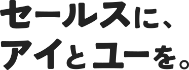
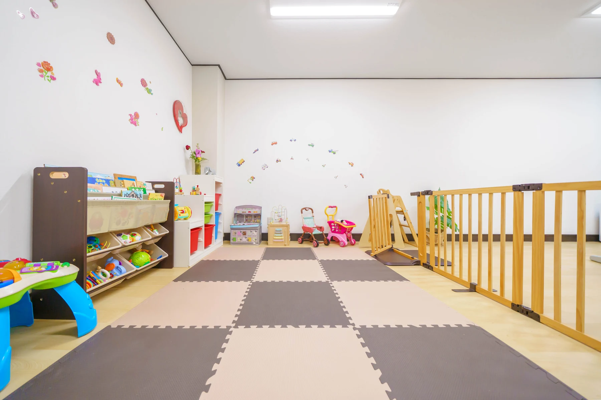
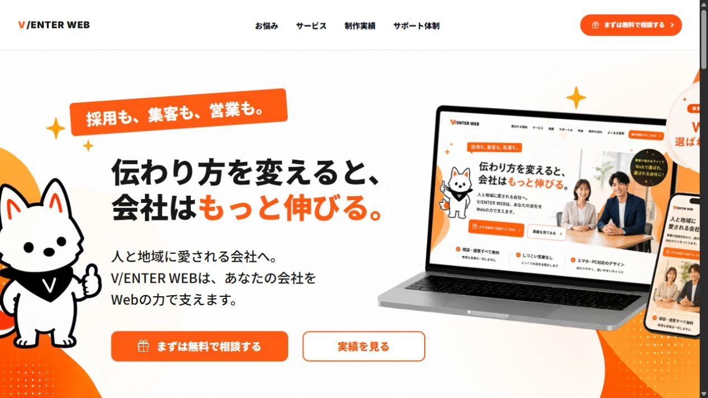

想いから、言葉へ。言葉から、かたちへ。一人ひとりの大切にしているものに向き合い、デザインを通じて、必要な人へ届けます。
想いを聞き、言葉にし、かたちにする。一人ひとりの背景に、ていねいに向き合う。事業や人が大切にしているものを、デザインを通じて届けていきます。


事業の背景にある想いを聞き、言葉とデザインで伝える。大切にしていることが必要な人へ届くよう、軸を整理します。
ロゴ、名刺、チラシ、Webサイト、店舗など。届けたい相手と伝えたいことに合わせて、表現を一緒につくります。
まずはここから！